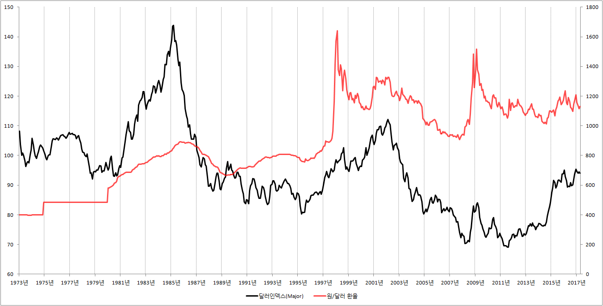

■ 달러인덱스와 원달러 환율전망
1.달러인덱스 뜻
달러인덱스란 미국 돈 달러의 전투력을 측정한 것입니다. 원리는 간단합니다. 1973년에 달러가 가지고 있던 전투력을 100으로 잡고, 오늘의 전투력을 측정합니다.
예를 들어 지금 현재 달러인덱스가 90이라면 달러의 전투력이 1973년보다 10% 하락했다는 이야기가 되고, 지금 현재 달러인덱스가 110이라면 달러의 전투력이 1973년 보다 10% 상승했다는 이야기가 됩니다.
2.달러인덱스와 원/달러 환율
달러인덱스, 쉽게 말해서 달러의 전투력이 1000쯤 된다고 합시다. 달러의 파워가 이렇게 세다면 유로도, 파운드도, 엔도, 위안도 일단 자세를 바짝 낮추고 몸조심을 할 수밖에 없습니다. 1973년보다 전투력이 10배나 강해진 달러한테 괜히 달려들었다가는 제대로 얻어터질 수 있기 때문입니다.
유로도, 파운드도, 엔도, 위안도 이렇게 달러 앞에서 한 수 접어주고 들어간다면 원화는 어떻게 될까요? 당연히 한 수 접어줄 수밖에 없습니다.
따라서 달러인덱스가 상승하면, 쉽게 말해서 달러의 전투력이 강해지면 원/달러 환율이 1달러 = 1000원 → 1달러 = 1100원 → 1달러 = 1200원으로 상승하게 됩니다. 달러가 상대적으로 힘이 없을 때는 ‘1 대 1000’으로 붙어도 그럭저럭 싸움을 할 만했는데 이제는 ‘1 대 1200’으로 붙어야 겨우 싸움이 되는 것입니다.
이번에는 반대의 경우를 생각해봅시다. 달러인덱스가 1000에서 10으로 하락했다고 합시다. 달러의 전투력이 이렇게 약해진다면 어떤 일이 일어날까요? 그동안 달러 앞에서 숨도 못 쉬던 유로가, 파운드가, 엔이 이제는 달러 앞에서 짝다리를 하고 이야기를 합니다.
달러가 이렇게 빌빌거린다면 원/달러 환율은 어떻게 될까요? 달러가 잘 나갈 때는 ‘1 대 1200’으로 싸워야 겨우 게임이 되었지만 이제는 사정이 달라졌습니다. 따라서 ‘1 대 1000’, 아니 ‘1 대 900’, 나아가 ‘1 대 800’으로 싸워도 어느 정도 게임이 됩니다. 즉 환율이 1달러 = 1000원 → 1달러 = 900원 → 1달러 = 800원으로 하락을 하게 됩니다.
3.달러인덱스와 원/달러 환율 전망
{kind=link}
위의 그래프를 보면 우리의 예측대로 달러인덱스가 상승하면 원/달러 환율이 상승하는 것을 확인 할 수 있습니다. 그리고 달러인덱스가 하락하면 원/달러 환율이 하락하는 것도 확인 할 수 있습니다.
따라서 원/달러환율의 미래를 전망하고 싶다면 우리는 달러인덱스를 반드시 체크해 볼 필요가 있습니다. 달러의 전투력이 강해지느냐, 아니면 약해지느냐에 따라 원/달러 환율의 미래가 달라질 수 있기 때문입니다.
※ 관련 글 : 미국 장단기금리차와 원/달러 환율 전망, 경상수지와 환율
4.관련 자료 조회 방법
■ 달러인덱스(major) : 세인트루이스 연방준비은행 → 검색 창에 dollar index 입력 → Trade Weighted U.S. Dollar Index: Major
■ 원/달러환율 조회 : 한국은행 경제통계시스템 → 8. 국제수지 / 외채 / 환율 → 8.8 환율